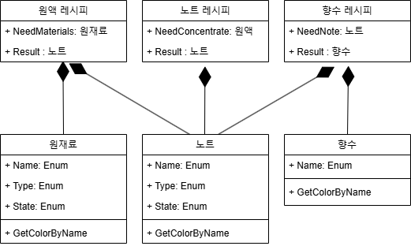
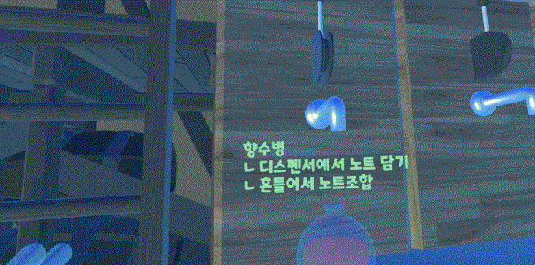

MULTIPLAYER VR · 2024.12 — 2025.01 · PL / 게임 시스템·VR 콘텐츠
냥젤리 조향 공방
병을 기울여 재료를 붓고 흔들어 향수를 만듭니다. 두 사람이 같은 병을 집으려 할 때 어느 손의 움직임을 따를지가 조향 규칙만큼 중요했습니다.

담당 작업
게임 상태·밤낮·저장 및 불러오기 시스템
재료와 레시피 기반 향수 조합 시스템
병 기울기·액체 전달·흔들기 조합 VR 인터랙션
PUN2 소유권 전환과 Grab 동기화 예외 처리
구현 과정
게임 데이터 분리
향수 종류와 레시피를 ScriptableObject로 정의하고 재료 조합은 LINQ로 비교했습니다. 진행 상태와 밸런스 데이터를 분리해 레시피 추가가 코드 수정으로 이어지지 않게 했습니다.
병 기울기 판정
컨트롤러가 잡은 병의 방향과 월드 아래 방향을 내적해 따르는 상태를 계산했습니다. 병 입구의 Raycast가 다른 용기를 찾았을 때만 액체 전달을 시작했습니다.
액체와 조합 피드백
전달량을 FillAmount 셰이더에 반영하고, 흔들림이 임계값을 넘으면 현재 재료 목록을 레시피와 대조했습니다. 결과에 따라 완성 향수와 화면 피드백을 갱신했습니다.
저장과 네트워크 연결
스테이지 정보를 JsonUtility로 직렬화한 뒤 PUN 닉네임을 키로 Firebase Realtime Database에 저장했습니다. Grab 상태, 소유권, 액체량은 RPC와 상태 동기화로 공유했습니다.
개발 중 해결한 문제
같은 병을 잡을 때 물리 결과가 달라짐
상호작용 시작 시 오브젝트 소유권을 요청하고 원격 플레이어가 다시 잡지 못하도록 레이어를 제한했습니다. 잡고 있는 상태를 일회성 RPC가 아닌 지속 상태로 동기화해 늦게 입장한 사용자도 같은 상태를 받게 했습니다.
씬 이동 후 진행 정보가 사라짐
게임 매니저를 씬 전환에도 유지되는 싱글턴으로 구성하고 상태 변경 콜백을 두었습니다. 저장 데이터는 Firebase 트랜잭션과 스냅샷으로 읽어 중복 쓰기와 비동기 순서 문제를 줄였습니다.
밤낮 변화가 장면마다 따로 움직임
시간 상태를 한곳에서 관리하고 DOTween으로 Directional Light와 Skybox 셰이더 값을 함께 보간해 조명과 배경이 동일한 시간축을 따르도록 만들었습니다.
개발 자료

